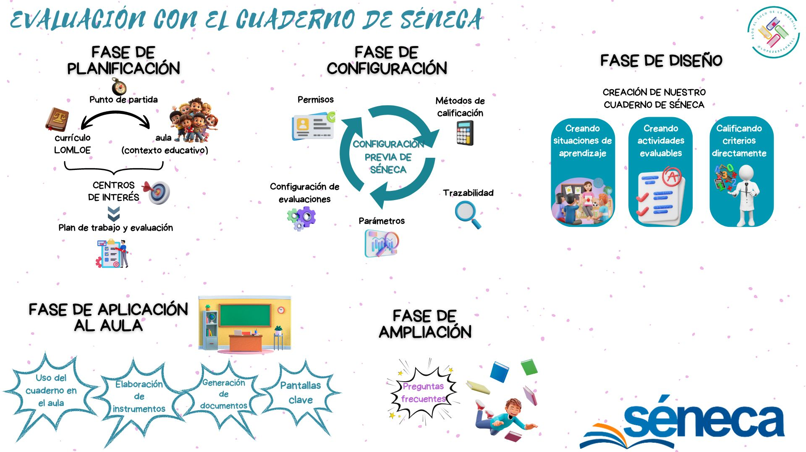

¿Y esto de qué va?
Lo que tienes en pantalla no es más que el producto final de una situación de aprendizaje dirigida al profesorado de Infantil, Primaria, Secundaria y Bachillerato que se fija como objetivo el fomento de una evaluación competencial y formativa usando el cuaderno de Séneca como herramienta digital para la gestión de los datos.
Nace fruto de mi pasión por el tema -pura locura- y de mi experiencia personal, tanto en mi aula -llevo usando el cuaderno de Séneca desde el comienzo- como en mis formaciones con el profesorado -he colaborado ya con diversos CEPs en esto).
Al mismo tiempo, nace con la modestia de intentar ser un punto de partida que acompañe al profesorado interesado al inicio de su camino, empujándole para que lo complete mediante su propia experiencia en el aula. Si un / a docente lo logra, entonces habrá merecido la pena.
Por otro lado, quiero dejar bien claro desde el principio que en mi opinión nunca debemos confundir el medio con el fin: el objetivo no es lograr que el profesorado use el cuaderno de Séneca, es mucho más que eso. El objetivo es que reflexione sobre el proceso de evaluación del aprendizaje y lleve a cabo en su aula una evaluación competencial y formativa encaminada a la mejora del aprendizaje de su alumnado. Este es el verdadero fin, que es posible lograr a través de diversos y variados medios, siendo uno de ellos el cuaderno de Séneca, idóneo para la recopilación y gestión de los datos (una fase clave de la evaluación, pero no la única).
Por último, el producto final que tienes en pantalla no está acabado, ni mucho menos. Experimentará mejoras poco a poco en el futuro, fruto del feedback que reciba del profesorado. También incorporará los cambios que se produzcan en la configuración y uso de la herramienta. Por tanto, vivirá su propio proceso de evaluación continua en primera persona.
Nuestros compañeros de viaje.
Cualquier viaje siempre es mejor si lo hacemos en compañía... Así que vamos a conocer brevemente a los sabios que nos guiarán en este REA sobre evaluación con el cuaderno de Séneca:

|

|
|
| LEXA es experta en legislación educativa, especialmente en LOMLOE. Se sabe de memoria artículos completos y, además, está realmente obsesionada por citar las referencias legales y por la fundamentación legislativa en general. | NumeraTOR es un profesor de matemáticas obsesionado con los números. Se preocupa mucho por explicar todo tipo de cálculos de forma clara y didáctica. La exactitud es su principal talento. | |

|

|
|
| FlashFormative: la evaluación formativa es casi su único centro de interés. Le obsesiona el feedback y la evaluación -pero la cualitativa en exclusiva-. El proceso de evaluación es su línea de vida. | ActivaTOR es un genio de la metodología. Disfruta planificando y llevando al aula todo tipo de tareas. Lleva el enfoque competencial en vena y, además, el cooperativo es su especialidad. | |

|
|
|
| ConecTOR es un listillo. Conoce todos los rincones de Internet. Es experto en webgrafías e hiperenlaces. Su cerebro tiene una conexión directa con ChatGPT. |
La ruta de nuestro viaje.
Antes de iniciar cualquier viaje es importante preparar la maleta y, por supuesto, saber hacia dónde nos dirigimos. Para hemos diseñado este mapa que te guiará en el proceso de aprendizaje que te dispones a comenzar:
